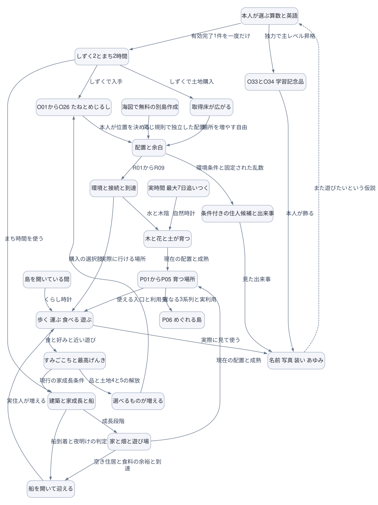
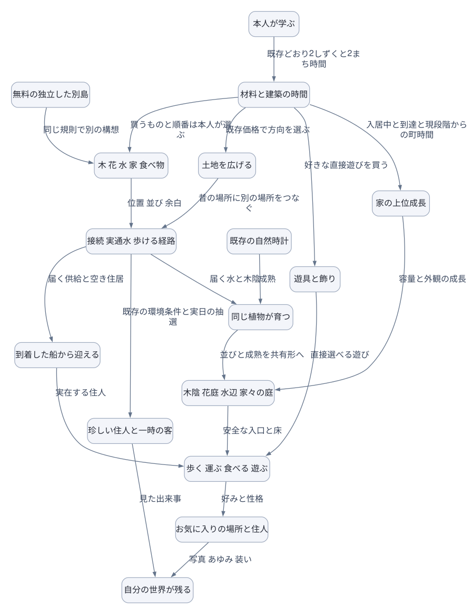
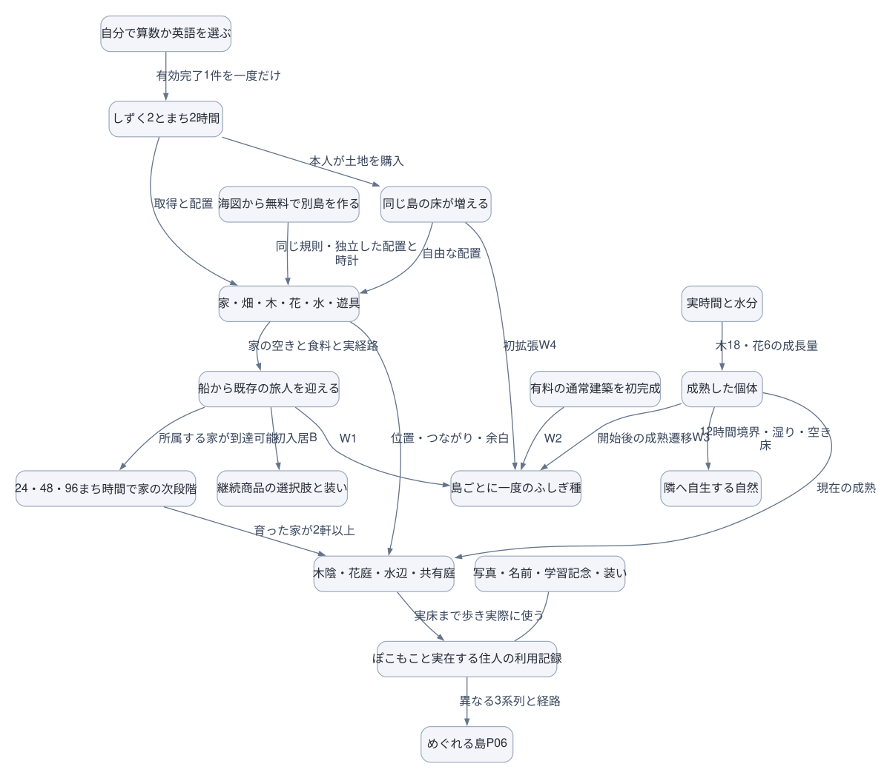
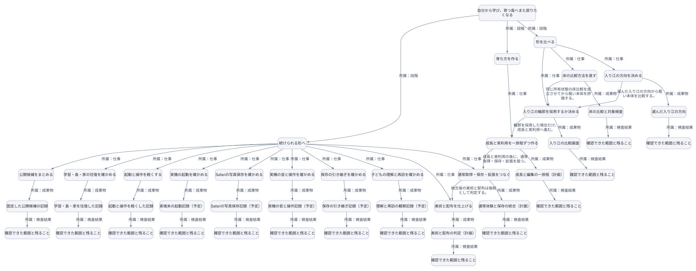

図と関係を読む
同じ正本から図・文章・Mermaidを生成しています。所属・依存・状態遷移・双方向・点線を区別し、原文と状態を保持します。
現行の島の体験と育成の関係・図1
元資料の関係を示します。実装・採用・現在の実行状態は元の記録で確認してください。

本人が選ぶ算数と英語
しずく2とまち2時間
O33とO34 学習記念品
O01からO26 たねとめじるし
建築と家成長と船
配置と余白
環境と接続と到達
実時間 最大7日追いつく
木と花と土が育つ
家と畑と遊び場
P01からP05 育つ場所
船を開いて迎える
歩く 運ぶ 食べる 遊ぶ
島を開いている間
すみごこちと最高げんき
選べるものが増える
取得床が広がる
P06 めぐれる島
条件付きの住人候補と出来事
海図で無料の別島作成
名前 写真 装い あゆみ
同じ関係を文章で読む
- 本人が選ぶ算数と英語 → しずく2とまち2時間：有効完了1件を一度だけ
- 本人が選ぶ算数と英語 → O33とO34 学習記念品：独力で主レベル昇格
- しずく2とまち2時間 → O01からO26 たねとめじるし：しずくで入手
- しずく2とまち2時間 → 建築と家成長と船：まち時間を使う
- O01からO26 たねとめじるし → 配置と余白：本人が位置を決める
- 配置と余白 → 環境と接続と到達：R01からR09
- 実時間 最大7日追いつく → 木と花と土が育つ：自然時計
- 環境と接続と到達 → 木と花と土が育つ：水と木陰
- 建築と家成長と船 → 家と畑と遊び場：成長段階
- 木と花と土が育つ → P01からP05 育つ場所：現在の配置と成熟
- 家と畑と遊び場 → P01からP05 育つ場所：現在の配置と成熟
- 家と畑と遊び場 → 船を開いて迎える：空き住居と食料の余裕と到達
- 建築と家成長と船 → 船を開いて迎える：船到着と夜明けの判定
- 船を開いて迎える → 歩く 運ぶ 食べる 遊ぶ：実住人が増える
- 島を開いている間 → 歩く 運ぶ 食べる 遊ぶ：くらし時計
- 環境と接続と到達 → 歩く 運ぶ 食べる 遊ぶ：実際に行ける場所
- P01からP05 育つ場所 → 歩く 運ぶ 食べる 遊ぶ：使える入口と利用先
- 歩く 運ぶ 食べる 遊ぶ → すみごこちと最高げんき：食と好みと近い遊び
- すみごこちと最高げんき → 建築と家成長と船：現行の家成長条件
- すみごこちと最高げんき → 選べるものが増える：品と土地4と5の解放
- 選べるものが増える → O01からO26 たねとめじるし：購入の選択肢
- しずく2とまち2時間 → 取得床が広がる：しずくで土地購入
- 取得床が広がる → 配置と余白：場所を増やす自由
- P01からP05 育つ場所 → P06 めぐれる島：異なる3系列と実利用
- 配置と余白 → 条件付きの住人候補と出来事：環境条件と固定された乱数
- 海図で無料の別島作成 → 配置と余白：同じ規則で独立した配置
- O33とO34 学習記念品 → 名前 写真 装い あゆみ：本人が飾る
- 歩く 運ぶ 食べる 遊ぶ → 名前 写真 装い あゆみ：実際に見て使う
- 条件付きの住人候補と出来事 → 名前 写真 装い あゆみ：見た出来事
- 名前 写真 装い あゆみ ⇢（点線） 本人が選ぶ算数と英語：また遊びたいという仮説
図の定義・根拠と版
図の表示は実行・採用・公開の承認を変更しません。
flowchart TD
Learn[本人が選ぶ算数と英語]
Reward[しずく2とまち2時間]
Keepsake[O33とO34 学習記念品]
Own[O01からO26 たねとめじるし]
Town[建築と家成長と船]
Layout[配置と余白]
Space[環境と接続と到達]
Nature[実時間 最大7日追いつく]
Plants[木と花と土が育つ]
Built[家と畑と遊び場]
Places[P01からP05 育つ場所]
Arrival[船を開いて迎える]
Life[歩く 運ぶ 食べる 遊ぶ]
Open[島を開いている間]
Comfort[すみごこちと最高げんき]
Unlock[選べるものが増える]
Land[取得床が広がる]
Tour[P06 めぐれる島]
Wonder[条件付きの住人候補と出来事]
Sea[海図で無料の別島作成]
History[名前 写真 装い あゆみ]
Learn[本人が選ぶ算数と英語] -->|有効完了1件を一度だけ| Reward[しずく2とまち2時間]
Learn[本人が選ぶ算数と英語] -->|独力で主レベル昇格| Keepsake[O33とO34 学習記念品]
Reward[しずく2とまち2時間] -->|しずくで入手| Own[O01からO26 たねとめじるし]
Reward[しずく2とまち2時間] -->|まち時間を使う| Town[建築と家成長と船]
Own[O01からO26 たねとめじるし] -->|本人が位置を決める| Layout[配置と余白]
Layout[配置と余白] -->|R01からR09| Space[環境と接続と到達]
Nature[実時間 最大7日追いつく] -->|自然時計| Plants[木と花と土が育つ]
Space[環境と接続と到達] -->|水と木陰| Plants[木と花と土が育つ]
Town[建築と家成長と船] -->|成長段階| Built[家と畑と遊び場]
Plants[木と花と土が育つ] -->|現在の配置と成熟| Places[P01からP05 育つ場所]
Built[家と畑と遊び場] -->|現在の配置と成熟| Places[P01からP05 育つ場所]
Built[家と畑と遊び場] -->|空き住居と食料の余裕と到達| Arrival[船を開いて迎える]
Town[建築と家成長と船] -->|船到着と夜明けの判定| Arrival[船を開いて迎える]
Arrival[船を開いて迎える] -->|実住人が増える| Life[歩く 運ぶ 食べる 遊ぶ]
Open[島を開いている間] -->|くらし時計| Life[歩く 運ぶ 食べる 遊ぶ]
Space[環境と接続と到達] -->|実際に行ける場所| Life[歩く 運ぶ 食べる 遊ぶ]
Places[P01からP05 育つ場所] -->|使える入口と利用先| Life[歩く 運ぶ 食べる 遊ぶ]
Life[歩く 運ぶ 食べる 遊ぶ] -->|食と好みと近い遊び| Comfort[すみごこちと最高げんき]
Comfort[すみごこちと最高げんき] -->|現行の家成長条件| Town[建築と家成長と船]
Comfort[すみごこちと最高げんき] -->|品と土地4と5の解放| Unlock[選べるものが増える]
Unlock[選べるものが増える] -->|購入の選択肢| Own[O01からO26 たねとめじるし]
Reward[しずく2とまち2時間] -->|しずくで土地購入| Land[取得床が広がる]
Land[取得床が広がる] -->|場所を増やす自由| Layout[配置と余白]
Places[P01からP05 育つ場所] -->|異なる3系列と実利用| Tour[P06 めぐれる島]
Layout[配置と余白] -->|環境条件と固定された乱数| Wonder[条件付きの住人候補と出来事]
Sea[海図で無料の別島作成] -->|同じ規則で独立した配置| Layout[配置と余白]
Keepsake[O33とO34 学習記念品] -->|本人が飾る| History[名前 写真 装い あゆみ]
Life[歩く 運ぶ 食べる 遊ぶ] -->|実際に見て使う| History[名前 写真 装い あゆみ]
Wonder[条件付きの住人候補と出来事] -->|見た出来事| History[名前 写真 装い あゆみ]
History[名前 写真 装い あゆみ] -.->|また遊びたいという仮説| Learn[本人が選ぶ算数と英語]
少ない素材から場所と暮らしを育てる仕様案・図1
元資料の関係を示します。実装・採用・現在の実行状態は元の記録で確認してください。

本人が学ぶ
材料と建築の時間
木 花 水 家 食べ物
遊具と飾り
接続 実通水 歩ける経路
既存の自然時計
同じ植物が育つ
木陰 花庭 水辺 家々の庭
家の上位成長
到着した船から迎える
歩く 運ぶ 食べる 遊ぶ
お気に入りの場所と住人
土地を広げる
無料の独立した別島
自分の世界が残る
珍しい住人と一時の客
同じ関係を文章で読む
- 本人が学ぶ → 材料と建築の時間：既存どおり2しずくと2まち時間
- 材料と建築の時間 → 木 花 水 家 食べ物：買うものと順番は本人が選ぶ
- 材料と建築の時間 → 遊具と飾り：好きな直接遊びを買う
- 木 花 水 家 食べ物 → 接続 実通水 歩ける経路：位置 並び 余白
- 既存の自然時計 → 同じ植物が育つ：成熟
- 接続 実通水 歩ける経路 → 同じ植物が育つ：届く水と木陰
- 同じ植物が育つ → 木陰 花庭 水辺 家々の庭：並びと成熟を共有形へ
- 材料と建築の時間 → 家の上位成長：入居中と到達と現段階からの町時間
- 家の上位成長 → 木陰 花庭 水辺 家々の庭：容量と外観の成長
- 接続 実通水 歩ける経路 → 到着した船から迎える：届く供給と空き住居
- 到着した船から迎える → 歩く 運ぶ 食べる 遊ぶ：実在する住人
- 木陰 花庭 水辺 家々の庭 → 歩く 運ぶ 食べる 遊ぶ：安全な入口と床
- 遊具と飾り → 歩く 運ぶ 食べる 遊ぶ：直接選べる遊び
- 歩く 運ぶ 食べる 遊ぶ → お気に入りの場所と住人：好みと性格
- 材料と建築の時間 → 土地を広げる：既存価格で方向を選ぶ
- 土地を広げる → 接続 実通水 歩ける経路：昔の場所に別の場所をつなぐ
- 無料の独立した別島 → 木 花 水 家 食べ物：同じ規則で別の構想
- お気に入りの場所と住人 → 自分の世界が残る：写真 あゆみ 装い
- 接続 実通水 歩ける経路 → 珍しい住人と一時の客：既存の環境条件と実日の抽選
- 珍しい住人と一時の客 → 自分の世界が残る：見た出来事
図の定義・根拠と版
図の表示は実行・採用・公開の承認を変更しません。
flowchart TD
Learn[本人が学ぶ]
Resource[材料と建築の時間]
Input[木 花 水 家 食べ物]
Play[遊具と飾り]
Rule[接続 実通水 歩ける経路]
Nature[既存の自然時計]
Plants[同じ植物が育つ]
Place[木陰 花庭 水辺 家々の庭]
Home[家の上位成長]
Arrival[到着した船から迎える]
Use[歩く 運ぶ 食べる 遊ぶ]
Attachment[お気に入りの場所と住人]
Land[土地を広げる]
Sea[無料の独立した別島]
History[自分の世界が残る]
Wonder[珍しい住人と一時の客]
Learn[本人が学ぶ] -->|既存どおり2しずくと2まち時間| Resource[材料と建築の時間]
Resource[材料と建築の時間] -->|買うものと順番は本人が選ぶ| Input[木 花 水 家 食べ物]
Resource[材料と建築の時間] -->|好きな直接遊びを買う| Play[遊具と飾り]
Input[木 花 水 家 食べ物] -->|位置 並び 余白| Rule[接続 実通水 歩ける経路]
Nature[既存の自然時計] -->|成熟| Plants[同じ植物が育つ]
Rule[接続 実通水 歩ける経路] -->|届く水と木陰| Plants[同じ植物が育つ]
Plants[同じ植物が育つ] -->|並びと成熟を共有形へ| Place[木陰 花庭 水辺 家々の庭]
Resource[材料と建築の時間] -->|入居中と到達と現段階からの町時間| Home[家の上位成長]
Home[家の上位成長] -->|容量と外観の成長| Place[木陰 花庭 水辺 家々の庭]
Rule[接続 実通水 歩ける経路] -->|届く供給と空き住居| Arrival[到着した船から迎える]
Arrival[到着した船から迎える] -->|実在する住人| Use[歩く 運ぶ 食べる 遊ぶ]
Place[木陰 花庭 水辺 家々の庭] -->|安全な入口と床| Use[歩く 運ぶ 食べる 遊ぶ]
Play[遊具と飾り] -->|直接選べる遊び| Use[歩く 運ぶ 食べる 遊ぶ]
Use[歩く 運ぶ 食べる 遊ぶ] -->|好みと性格| Attachment[お気に入りの場所と住人]
Resource[材料と建築の時間] -->|既存価格で方向を選ぶ| Land[土地を広げる]
Land[土地を広げる] -->|昔の場所に別の場所をつなぐ| Rule[接続 実通水 歩ける経路]
Sea[無料の独立した別島] -->|同じ規則で別の構想| Input[木 花 水 家 食べ物]
Attachment[お気に入りの場所と住人] -->|写真 あゆみ 装い| History[自分の世界が残る]
Rule[接続 実通水 歩ける経路] -->|既存の環境条件と実日の抽選| Wonder[珍しい住人と一時の客]
Wonder[珍しい住人と一時の客] -->|見た出来事| History[自分の世界が残る]
v0.4の育ち方と実装の対応・図1
元資料の関係を示します。実装・採用・現在の実行状態は元の記録で確認してください。

自分で算数か英語を選ぶ
しずく2とまち2時間
家・畑・木・花・水・遊具
船から既存の旅人を迎える
継続商品の選択肢と装い
24・48・96まち時間で家の次段階
実時間と水分
成熟した個体
隣へ自生する自然
木陰・花庭・水辺・共有庭
ぽこもこと実在する住人の利用記録
めぐれる島P06
同じ島の床が増える
海図から無料で別島を作る
島ごとに一度のふしぎ種
有料の通常建築を初完成
写真・名前・学習記念・装い
同じ関係を文章で読む
- 自分で算数か英語を選ぶ → しずく2とまち2時間：有効完了1件を一度だけ
- しずく2とまち2時間 → 家・畑・木・花・水・遊具：取得と配置
- 家・畑・木・花・水・遊具 → 船から既存の旅人を迎える：家の空きと食料と実経路
- 船から既存の旅人を迎える → 継続商品の選択肢と装い：初入居B
- 船から既存の旅人を迎える → 24・48・96まち時間で家の次段階：所属する家が到達可能
- 実時間と水分 → 成熟した個体：木18・花6の成長量
- 成熟した個体 → 隣へ自生する自然：12時間境界・湿り・空き床
- 家・畑・木・花・水・遊具 → 木陰・花庭・水辺・共有庭：位置・つながり・余白
- 成熟した個体 → 木陰・花庭・水辺・共有庭：現在の成熟
- 24・48・96まち時間で家の次段階 → 木陰・花庭・水辺・共有庭：育った家が2軒以上
- 木陰・花庭・水辺・共有庭 → ぽこもこと実在する住人の利用記録：実床まで歩き実際に使う
- ぽこもこと実在する住人の利用記録 → めぐれる島P06：異なる3系列と経路
- しずく2とまち2時間 → 同じ島の床が増える：本人が土地を購入
- 同じ島の床が増える → 家・畑・木・花・水・遊具：自由な配置
- 海図から無料で別島を作る → 家・畑・木・花・水・遊具：同じ規則・独立した配置と時計
- 船から既存の旅人を迎える → 島ごとに一度のふしぎ種：W1
- 有料の通常建築を初完成 → 島ごとに一度のふしぎ種：W2
- 成熟した個体 → 島ごとに一度のふしぎ種：開始後の成熟遷移W3
- 同じ島の床が増える → 島ごとに一度のふしぎ種：初拡張W4
- 写真・名前・学習記念・装い —（関連のみ） ぽこもこと実在する住人の利用記録：
図の定義・根拠と版
図の表示は実行・採用・公開の承認を変更しません。
flowchart TD
Choose[自分で算数か英語を選ぶ]
Earn[しずく2とまち2時間]
Owners[家・畑・木・花・水・遊具]
Welcome[船から既存の旅人を迎える]
Open[継続商品の選択肢と装い]
Home[24・48・96まち時間で家の次段階]
Nature[実時間と水分]
Mature[成熟した個体]
Spread[隣へ自生する自然]
Places[木陰・花庭・水辺・共有庭]
Use[ぽこもこと実在する住人の利用記録]
Tour[めぐれる島P06]
Land[同じ島の床が増える]
Sea[海図から無料で別島を作る]
Memorial[島ごとに一度のふしぎ種]
Build[有料の通常建築を初完成]
History[写真・名前・学習記念・装い]
Choose[自分で算数か英語を選ぶ] -->|有効完了1件を一度だけ| Earn[しずく2とまち2時間]
Earn[しずく2とまち2時間] -->|取得と配置| Owners[家・畑・木・花・水・遊具]
Owners[家・畑・木・花・水・遊具] -->|家の空きと食料と実経路| Welcome[船から既存の旅人を迎える]
Welcome[船から既存の旅人を迎える] -->|初入居B| Open[継続商品の選択肢と装い]
Welcome[船から既存の旅人を迎える] -->|所属する家が到達可能| Home[24・48・96まち時間で家の次段階]
Nature[実時間と水分] -->|木18・花6の成長量| Mature[成熟した個体]
Mature[成熟した個体] -->|12時間境界・湿り・空き床| Spread[隣へ自生する自然]
Owners[家・畑・木・花・水・遊具] -->|位置・つながり・余白| Places[木陰・花庭・水辺・共有庭]
Mature[成熟した個体] -->|現在の成熟| Places[木陰・花庭・水辺・共有庭]
Home[24・48・96まち時間で家の次段階] -->|育った家が2軒以上| Places[木陰・花庭・水辺・共有庭]
Places[木陰・花庭・水辺・共有庭] -->|実床まで歩き実際に使う| Use[ぽこもこと実在する住人の利用記録]
Use[ぽこもこと実在する住人の利用記録] -->|異なる3系列と経路| Tour[めぐれる島P06]
Earn[しずく2とまち2時間] -->|本人が土地を購入| Land[同じ島の床が増える]
Land[同じ島の床が増える] -->|自由な配置| Owners[家・畑・木・花・水・遊具]
Sea[海図から無料で別島を作る] -->|同じ規則・独立した配置と時計| Owners[家・畑・木・花・水・遊具]
Welcome[船から既存の旅人を迎える] -->|W1| Memorial[島ごとに一度のふしぎ種]
Build[有料の通常建築を初完成] -->|W2| Memorial[島ごとに一度のふしぎ種]
Mature[成熟した個体] -->|開始後の成熟遷移W3| Memorial[島ごとに一度のふしぎ種]
Land[同じ島の床が増える] -->|初拡張W4| Memorial[島ごとに一度のふしぎ種]
History[写真・名前・学習記念・装い] --- Use[ぽこもこと実在する住人の利用記録]
Sansuの仕事・目標・仕事・成果と検査
2026-10-19時点の記録。現在の進捗は元の仕事正本で確認します。所属の線は実行順や依存を意味しません。状態・未確認・停止理由は各項目と原文を参照します。

自分から学び、育つ島へまた戻りたくなる
状態：進行中
形を比べる
状態：停止中
育ち方を作る
状態：順番待ち
続けられる形へ
状態：順番待ち
入り江の方向を決める
状態：完了。元の記録に沿って一件ずつ確認する。
床の比較方法を直す
状態：完了。元の記録に沿って一件ずつ確認する。
入り江の輪郭を採用するか決める
状態：停止中。輪郭の採用が未決定。採用前に成長や通常保存の制作を先行しない。。比較の記録を確認し、進める・直して比べる・保留するを選ぶ。
成長と実利用を一旅程ずつ作る
状態：順番待ち。元の記録に沿って一件ずつ確認する。
通常取得・保存・拡張をつなぐ
状態：順番待ち。元の記録に沿って一件ずつ確認する。
美術と配布を仕上げる
状態：順番待ち。元の記録に沿って一件ずつ確認する。
公開候補をまとめる
状態：順番待ち。関連する仕事。共有キューの順で、必要な一件だけ開始する。
学習・島・家の往復を確かめる
状態：順番待ち。関連する仕事。共有キューの順で、必要な一件だけ開始する。
起動と操作を軽くする
状態：順番待ち。関連する仕事。共有キューの順で、必要な一件だけ開始する。
実機の起動を確かめる
状態：停止中。同じ端末と候補が必要。。同じ版で確認条件を用意し、担当タスクへ結果を戻す。
Safariの写真保存を確かめる
状態：停止中。実Safari・ホーム画面版が必要。。同じ版で確認条件を用意し、担当タスクへ結果を戻す。
実機の音と操作を確かめる
状態：停止中。実スピーカーと入力・読み上げの確認が必要。。同じ版で確認条件を用意し、担当タスクへ結果を戻す。
保存の引き継ぎを確かめる
状態：停止中。実利用者の対象端末と復旧手段が必要。。同じ版で確認条件を用意し、担当タスクへ結果を戻す。
子どもの理解と再訪を確かめる
状態：停止中。参加者と観察の準備が必要。。同じ版で確認条件を用意し、担当タスクへ結果を戻す。
選んだ入り江の方向
状態：完了。根拠区分：recorded
床の比較と対象検査
状態：完了。根拠区分：recorded
入り江の比較画面
状態：完了。根拠区分：recorded
成長と編集の一旅程（計画）
状態：提案・未採用。根拠区分：推測・提案
通常体験と保存の統合（計画）
状態：提案・未採用。根拠区分：推測・提案
美術と配布の判定（計画）
状態：提案・未採用。根拠区分：推測・提案
固定した公開候補の記録
状態：完了。根拠区分：recorded
学習・島・家を往復した記録
状態：完了。根拠区分：recorded
起動と操作を軽くした記録
状態：完了。根拠区分：recorded
実端末の起動記録（予定）
状態：提案・未採用。根拠区分：推測・提案
Safariの写真保存記録（予定）
状態：提案・未採用。根拠区分：推測・提案
実機の音と操作記録（予定）
状態：提案・未採用。根拠区分：推測・提案
保存の引き継ぎ記録（予定）
状態：提案・未採用。根拠区分：推測・提案
理解と再訪の観察記録（予定）
状態：提案・未採用。根拠区分：推測・提案
確認できた範囲と残ること
状態：完了。方向の選択は記録済み。最終美術の採用とは別。
確認できた範囲と残ること
状態：合格。対象の統合検査は合格と記録。通常保存や全島の通行は別。
確認できた範囲と残ること
状態：未確認。輪郭の違いと診断範囲の動作は確認済み。見た目の仕上げ・説明なしの理解・通常保存・公開は未確認。
確認できた範囲と残ること
状態：未確認。輪郭採用後の計画。全島の実利用は未完。
確認できた範囲と残ること
状態：未確認。前の成長と実利用の後。今回の輪郭を使った通常体験は未確認。
確認できた範囲と残ること
状態：未確認。後続計画。美術・実機・公開の合格は未確認。
確認できた範囲と残ること
状態：未確認。公開時の配信先と対象版の照合、実利用者の保存・実機の確認が残る。
確認できた範囲と残ること
状態：未確認。実機の音と読み上げ、子どもの理解と再訪は未確認。
確認できた範囲と残ること
状態：未確認。操作の待ち時間は未達。実機の起動・電池・負荷は未確認。
確認できた範囲と残ること
状態：未確認。以前の改善を現在の端末での解消に読み替えない。
確認できた範囲と残ること
状態：未確認。過去に失敗と成功の履歴あり。最新候補は未確認。
確認できた範囲と残ること
状態：未確認。自動確認はあるが、実機の聴感と負荷は未確認。
確認できた範囲と残ること
状態：未確認。検証用データの移行結果がある。実利用者の保存は未確認。
確認できた範囲と残ること
状態：未確認。現在の島で自分から学ぶか、翌日も戻るかは未確認。
同じ関係を文章で読む
- 自分から学び、育つ島へまた戻りたくなる → 形を比べる：所属：段階
- 自分から学び、育つ島へまた戻りたくなる → 育ち方を作る：所属：段階
- 自分から学び、育つ島へまた戻りたくなる → 続けられる形へ：所属：段階
- 形を比べる → 入り江の方向を決める：所属：仕事
- 形を比べる → 床の比較方法を直す：所属：仕事
- 形を比べる → 入り江の輪郭を採用するか決める：所属：仕事
- 育ち方を作る → 成長と実利用を一旅程ずつ作る：所属：仕事
- 続けられる形へ → 通常取得・保存・拡張をつなぐ：所属：仕事
- 続けられる形へ → 美術と配布を仕上げる：所属：仕事
- 続けられる形へ → 公開候補をまとめる：所属：仕事
- 続けられる形へ → 学習・島・家の往復を確かめる：所属：仕事
- 続けられる形へ → 起動と操作を軽くする：所属：仕事
- 続けられる形へ → 実機の起動を確かめる：所属：仕事
- 続けられる形へ → Safariの写真保存を確かめる：所属：仕事
- 続けられる形へ → 実機の音と操作を確かめる：所属：仕事
- 続けられる形へ → 保存の引き継ぎを確かめる：所属：仕事
- 続けられる形へ → 子どもの理解と再訪を確かめる：所属：仕事
- 入り江の方向を決める → 選んだ入り江の方向：所属：成果物
- 床の比較方法を直す → 床の比較と対象検査：所属：成果物
- 入り江の輪郭を採用するか決める → 入り江の比較画面：所属：成果物
- 成長と実利用を一旅程ずつ作る → 成長と編集の一旅程（計画）：所属：成果物
- 通常取得・保存・拡張をつなぐ → 通常体験と保存の統合（計画）：所属：成果物
- 美術と配布を仕上げる → 美術と配布の判定（計画）：所属：成果物
- 公開候補をまとめる → 固定した公開候補の記録：所属：成果物
- 学習・島・家の往復を確かめる → 学習・島・家を往復した記録：所属：成果物
- 起動と操作を軽くする → 起動と操作を軽くした記録：所属：成果物
- 実機の起動を確かめる → 実端末の起動記録（予定）：所属：成果物
- Safariの写真保存を確かめる → Safariの写真保存記録（予定）：所属：成果物
- 実機の音と操作を確かめる → 実機の音と操作記録（予定）：所属：成果物
- 保存の引き継ぎを確かめる → 保存の引き継ぎ記録（予定）：所属：成果物
- 子どもの理解と再訪を確かめる → 理解と再訪の観察記録（予定）：所属：成果物
- 選んだ入り江の方向 → 確認できた範囲と残ること：所属：検査結果
- 床の比較と対象検査 → 確認できた範囲と残ること：所属：検査結果
- 入り江の比較画面 → 確認できた範囲と残ること：所属：検査結果
- 成長と編集の一旅程（計画） → 確認できた範囲と残ること：所属：検査結果
- 通常体験と保存の統合（計画） → 確認できた範囲と残ること：所属：検査結果
- 美術と配布の判定（計画） → 確認できた範囲と残ること：所属：検査結果
- 固定した公開候補の記録 → 確認できた範囲と残ること：所属：検査結果
- 学習・島・家を往復した記録 → 確認できた範囲と残ること：所属：検査結果
- 起動と操作を軽くした記録 → 確認できた範囲と残ること：所属：検査結果
- 実端末の起動記録（予定） → 確認できた範囲と残ること：所属：検査結果
- Safariの写真保存記録（予定） → 確認できた範囲と残ること：所属：検査結果
- 実機の音と操作記録（予定） → 確認できた範囲と残ること：所属：検査結果
- 保存の引き継ぎ記録（予定） → 確認できた範囲と残ること：所属：検査結果
- 理解と再訪の観察記録（予定） → 確認できた範囲と残ること：所属：検査結果
- 入り江の方向を決める → 入り江の輪郭を採用するか決める：選んだ入り江の方向から粗い本体を比較する。
- 床の比較方法を直す → 入り江の輪郭を採用するか決める：同じ所有状態の床比較を成立させてから粗い本体を評価する。
- 入り江の輪郭を採用するか決める → 成長と実利用を一旅程ずつ作る：輪郭を採用した場合だけ、成長と実利用へ進む。
- 成長と実利用を一旅程ずつ作る → 通常取得・保存・拡張をつなぐ：成長と実利用の後に、通常取得・保存・拡張を扱う。
- 通常取得・保存・拡張をつなぐ → 美術と配布を仕上げる：統合後の美術と配布は後続として判定する。
図の定義・根拠と版
図の表示は実行・採用・公開の承認を変更しません。
flowchart TD
node_0[自分から学び、育つ島へまた戻りたくなる]
node_1[形を比べる]
node_2[育ち方を作る]
node_3[続けられる形へ]
node_4[入り江の方向を決める]
node_5[床の比較方法を直す]
node_6[入り江の輪郭を採用するか決める]
node_7[成長と実利用を一旅程ずつ作る]
node_8[通常取得・保存・拡張をつなぐ]
node_9[美術と配布を仕上げる]
node_10[公開候補をまとめる]
node_11[学習・島・家の往復を確かめる]
node_12[起動と操作を軽くする]
node_13[実機の起動を確かめる]
node_14[Safariの写真保存を確かめる]
node_15[実機の音と操作を確かめる]
node_16[保存の引き継ぎを確かめる]
node_17[子どもの理解と再訪を確かめる]
node_18[選んだ入り江の方向]
node_19[床の比較と対象検査]
node_20[入り江の比較画面]
node_21[成長と編集の一旅程（計画）]
node_22[通常体験と保存の統合（計画）]
node_23[美術と配布の判定（計画）]
node_24[固定した公開候補の記録]
node_25[学習・島・家を往復した記録]
node_26[起動と操作を軽くした記録]
node_27[実端末の起動記録（予定）]
node_28[Safariの写真保存記録（予定）]
node_29[実機の音と操作記録（予定）]
node_30[保存の引き継ぎ記録（予定）]
node_31[理解と再訪の観察記録（予定）]
node_32[確認できた範囲と残ること]
node_33[確認できた範囲と残ること]
node_34[確認できた範囲と残ること]
node_35[確認できた範囲と残ること]
node_36[確認できた範囲と残ること]
node_37[確認できた範囲と残ること]
node_38[確認できた範囲と残ること]
node_39[確認できた範囲と残ること]
node_40[確認できた範囲と残ること]
node_41[確認できた範囲と残ること]
node_42[確認できた範囲と残ること]
node_43[確認できた範囲と残ること]
node_44[確認できた範囲と残ること]
node_45[確認できた範囲と残ること]
node_0[自分から学び、育つ島へまた戻りたくなる] -->|所属：段階| node_1[形を比べる]
node_0[自分から学び、育つ島へまた戻りたくなる] -->|所属：段階| node_2[育ち方を作る]
node_0[自分から学び、育つ島へまた戻りたくなる] -->|所属：段階| node_3[続けられる形へ]
node_1[形を比べる] -->|所属：仕事| node_4[入り江の方向を決める]
node_1[形を比べる] -->|所属：仕事| node_5[床の比較方法を直す]
node_1[形を比べる] -->|所属：仕事| node_6[入り江の輪郭を採用するか決める]
node_2[育ち方を作る] -->|所属：仕事| node_7[成長と実利用を一旅程ずつ作る]
node_3[続けられる形へ] -->|所属：仕事| node_8[通常取得・保存・拡張をつなぐ]
node_3[続けられる形へ] -->|所属：仕事| node_9[美術と配布を仕上げる]
node_3[続けられる形へ] -->|所属：仕事| node_10[公開候補をまとめる]
node_3[続けられる形へ] -->|所属：仕事| node_11[学習・島・家の往復を確かめる]
node_3[続けられる形へ] -->|所属：仕事| node_12[起動と操作を軽くする]
node_3[続けられる形へ] -->|所属：仕事| node_13[実機の起動を確かめる]
node_3[続けられる形へ] -->|所属：仕事| node_14[Safariの写真保存を確かめる]
node_3[続けられる形へ] -->|所属：仕事| node_15[実機の音と操作を確かめる]
node_3[続けられる形へ] -->|所属：仕事| node_16[保存の引き継ぎを確かめる]
node_3[続けられる形へ] -->|所属：仕事| node_17[子どもの理解と再訪を確かめる]
node_4[入り江の方向を決める] -->|所属：成果物| node_18[選んだ入り江の方向]
node_5[床の比較方法を直す] -->|所属：成果物| node_19[床の比較と対象検査]
node_6[入り江の輪郭を採用するか決める] -->|所属：成果物| node_20[入り江の比較画面]
node_7[成長と実利用を一旅程ずつ作る] -->|所属：成果物| node_21[成長と編集の一旅程（計画）]
node_8[通常取得・保存・拡張をつなぐ] -->|所属：成果物| node_22[通常体験と保存の統合（計画）]
node_9[美術と配布を仕上げる] -->|所属：成果物| node_23[美術と配布の判定（計画）]
node_10[公開候補をまとめる] -->|所属：成果物| node_24[固定した公開候補の記録]
node_11[学習・島・家の往復を確かめる] -->|所属：成果物| node_25[学習・島・家を往復した記録]
node_12[起動と操作を軽くする] -->|所属：成果物| node_26[起動と操作を軽くした記録]
node_13[実機の起動を確かめる] -->|所属：成果物| node_27[実端末の起動記録（予定）]
node_14[Safariの写真保存を確かめる] -->|所属：成果物| node_28[Safariの写真保存記録（予定）]
node_15[実機の音と操作を確かめる] -->|所属：成果物| node_29[実機の音と操作記録（予定）]
node_16[保存の引き継ぎを確かめる] -->|所属：成果物| node_30[保存の引き継ぎ記録（予定）]
node_17[子どもの理解と再訪を確かめる] -->|所属：成果物| node_31[理解と再訪の観察記録（予定）]
node_18[選んだ入り江の方向] -->|所属：検査結果| node_32[確認できた範囲と残ること]
node_19[床の比較と対象検査] -->|所属：検査結果| node_33[確認できた範囲と残ること]
node_20[入り江の比較画面] -->|所属：検査結果| node_34[確認できた範囲と残ること]
node_21[成長と編集の一旅程（計画）] -->|所属：検査結果| node_35[確認できた範囲と残ること]
node_22[通常体験と保存の統合（計画）] -->|所属：検査結果| node_36[確認できた範囲と残ること]
node_23[美術と配布の判定（計画）] -->|所属：検査結果| node_37[確認できた範囲と残ること]
node_24[固定した公開候補の記録] -->|所属：検査結果| node_38[確認できた範囲と残ること]
node_25[学習・島・家を往復した記録] -->|所属：検査結果| node_39[確認できた範囲と残ること]
node_26[起動と操作を軽くした記録] -->|所属：検査結果| node_40[確認できた範囲と残ること]
node_27[実端末の起動記録（予定）] -->|所属：検査結果| node_41[確認できた範囲と残ること]
node_28[Safariの写真保存記録（予定）] -->|所属：検査結果| node_42[確認できた範囲と残ること]
node_29[実機の音と操作記録（予定）] -->|所属：検査結果| node_43[確認できた範囲と残ること]
node_30[保存の引き継ぎ記録（予定）] -->|所属：検査結果| node_44[確認できた範囲と残ること]
node_31[理解と再訪の観察記録（予定）] -->|所属：検査結果| node_45[確認できた範囲と残ること]
node_4[入り江の方向を決める] -->|選んだ入り江の方向から粗い本体を比較する。| node_6[入り江の輪郭を採用するか決める]
node_5[床の比較方法を直す] -->|同じ所有状態の床比較を成立させてから粗い本体を評価する。| node_6[入り江の輪郭を採用するか決める]
node_6[入り江の輪郭を採用するか決める] -->|輪郭を採用した場合だけ、成長と実利用へ進む。| node_7[成長と実利用を一旅程ずつ作る]
node_7[成長と実利用を一旅程ずつ作る] -->|成長と実利用の後に、通常取得・保存・拡張を扱う。| node_8[通常取得・保存・拡張をつなぐ]
node_8[通常取得・保存・拡張をつなぐ] -->|統合後の美術と配布は後続として判定する。| node_9[美術と配布を仕上げる]